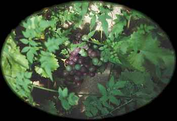
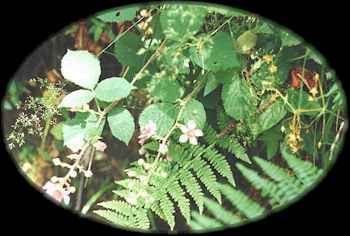

Muin
Vine (September 2 - September 29)

Vine - The grape (Vitis vinifera L.) is a vine growing as long as 115 feet, in open woodlands and along the edges of forests, but most commonly seen today in cultivation, as the source of wine, grape juice, and the grape juice concentrate that is so widely used as a sweetener. European grapes are extensively cultivated in North America, especially in the southwest, and an industry and an agricultural discipline are devoted to their care and the production of wine. Grapes are in the Grape family (Vitaceae). Curtis Clark

Blackberry Flowers. The Blackberry is a substitute for Grape in England, where Grapevines are less than common.